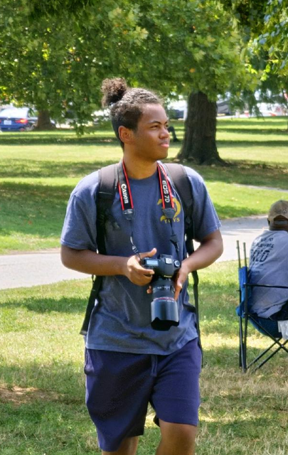

Miller Daniel Rogers-Tetrick

Miller Rogers-Tetrick is a multi-platform journalism major with a focus on photography and digital storytelling at the University of Maryland.
My work sits at the intersection of culture, community and representation. I'm committed to telling stories that center student life, Latine communities, art, and identity. I'm currently a freelance reporter and staff photographer for Stories Beneath the Shell, a staff photographer and freelance writer for La Voz Latina, and a Spanish translator for The Diamondback. Across these roles, I've covered everything from politics and campus culture to arts and entertainment, always with a focus on accessible, community-driven journalism. I'm interested in event photography, digital media and reporting on the arts and culture. I'm also interested in Spanish reporting.